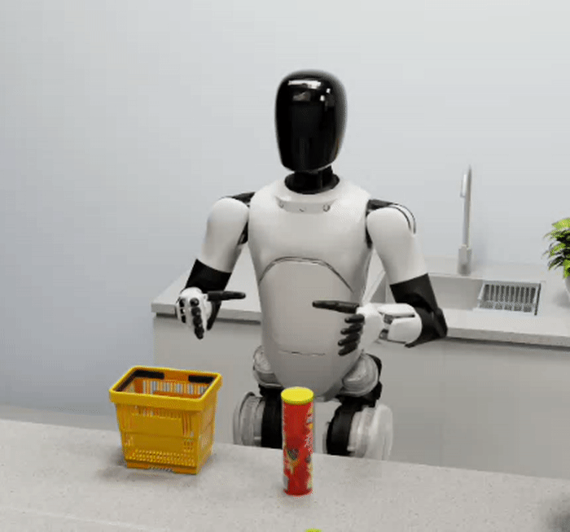
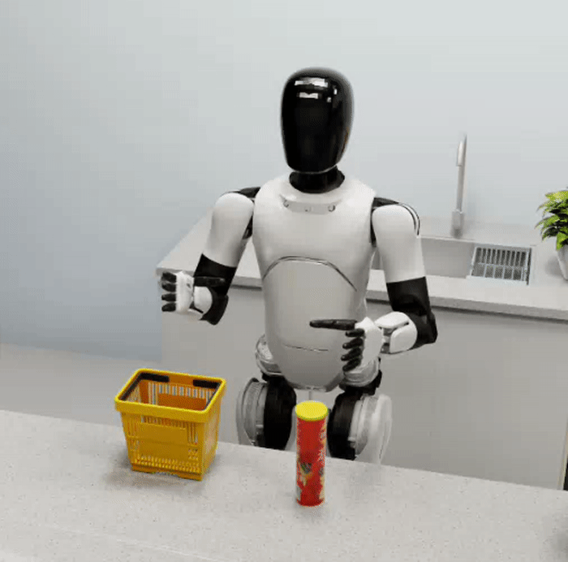
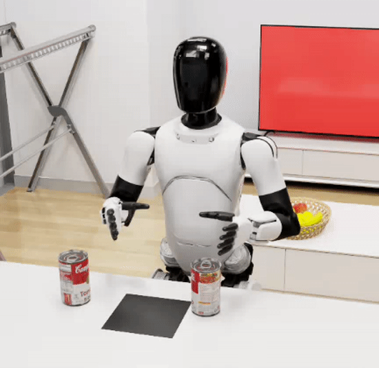
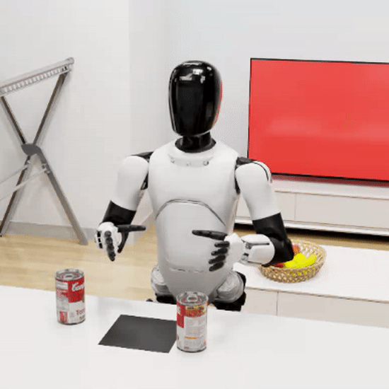
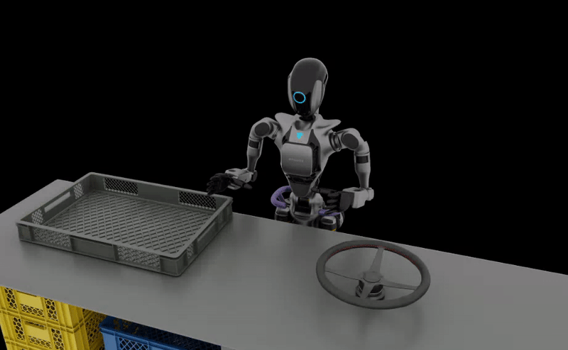
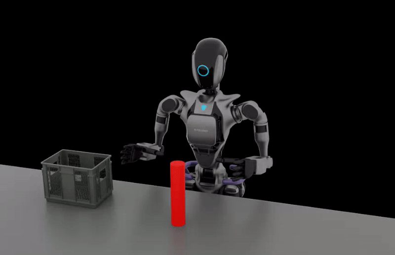

05 — Qualitative Results
Task Demonstrations
Direct comparison between the 4-point-only baseline and Seed2Scale-augmented policy across representative manipulation tasks.
Kitchen Cleanup · Task 1
BASELINE
SEED2SCALE

4-Point Baseline

Seed2Scale (Ours)
Can Stacking · Task 4
BASELINE
SEED2SCALE

4-Point Baseline

Seed2Scale (Ours)
Seed2Scale vs. MimicGen on GR-1 Tasks
Smoother Motion, Higher Success
Seed2Scale produces physically plausible, smooth trajectories. MimicGen's IK-based approach introduces severe high-frequency instability, yielding kinematically infeasible motions..
Wheel ManipulationMimicGen

Policy: 34.75% · Replay: 48.50%
Wheel ManipulationSeed2Scale

Policy: 93.25% ↑+168% · Replay: 67.86%
Cylinder GraspingMimicGen

Policy: 37.25% · Replay: 21.00%
Cylinder GraspingSeed2Scale

Policy: 66.00% ↑+77% · Replay: 86.96% ↑4×